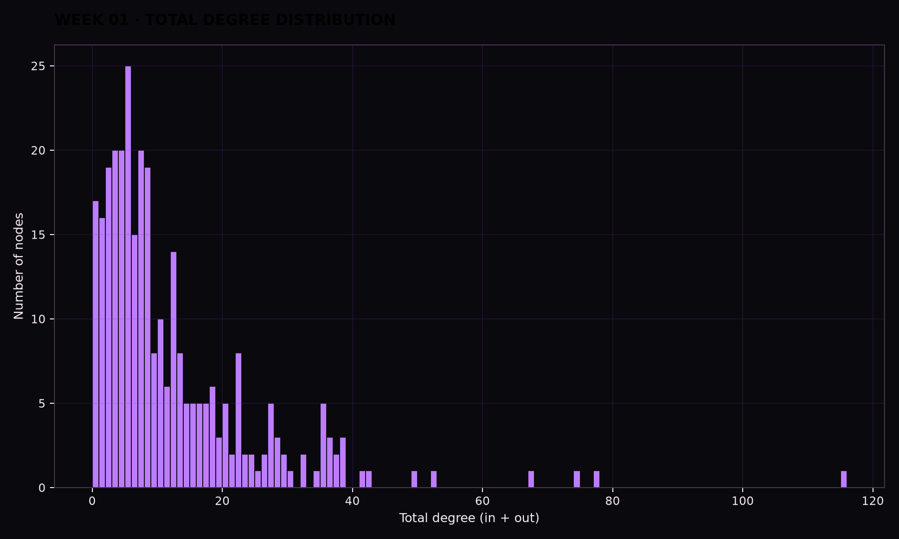
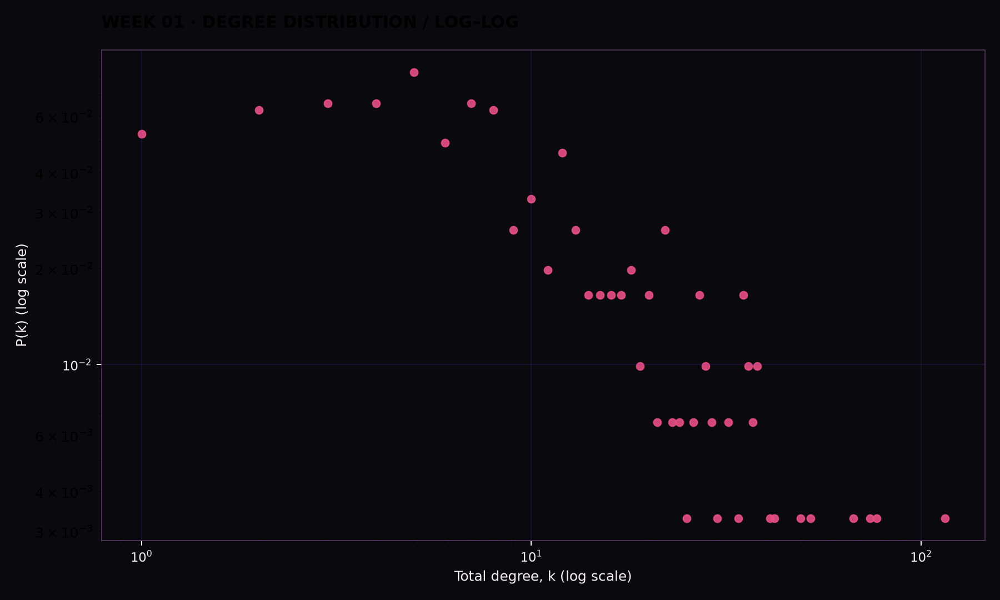
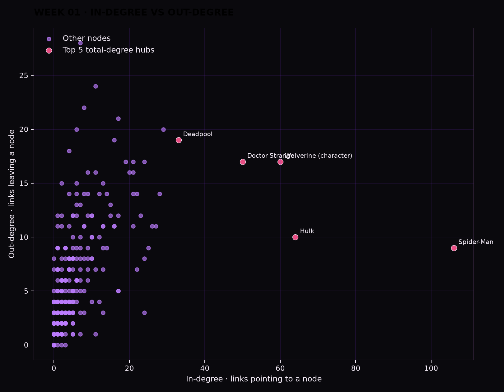
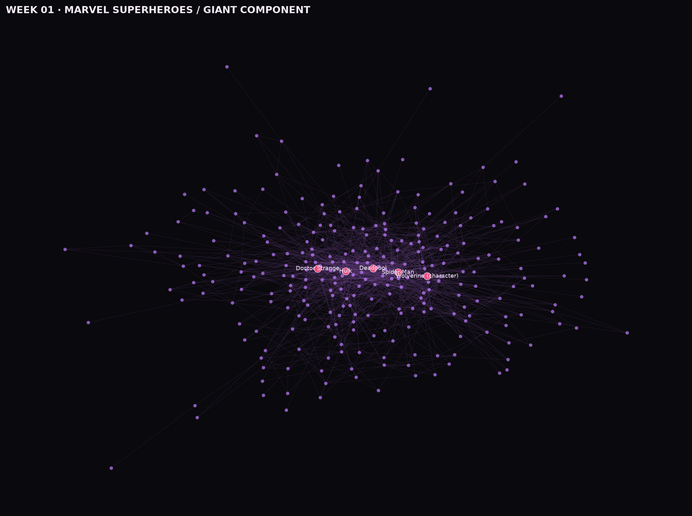

What we asked.
We wanted to know whether the network has a recognisable degree distribution, whether it changes when we look on linear and log–log scales, and how different the answers are for in-degree versus out-degree. In other words: who is linked to most, who links out most, and why might those be different people?
What we did.
We loaded the 303 Marvel superhero nodes and 1,784 directed Wikipedia links into NetworkX. We computed total degree, in-degree, and out-degree for every node, identified weakly connected components, and compared the largest hubs with the isolated nodes that have no links at all.




The numbers.
| Rank | Character | In-degree |
|---|---|---|
| 1 | Spider-Man | 106 |
| 2 | Hulk | 64 |
| 3 | Wolverine | 60 |
| 4 | Doctor Strange | 50 |
| 5 | Deadpool | 33 |
| Rank | Character | Out-degree |
|---|---|---|
| 1 | Betsy Braddock | 28 |
| 2 | Cloak and Dagger | 24 |
| 3 | Adam Warlock | 22 |
| 4 | Venom | 21 |
| 5 | She-Hulk | 20 |
What surprised us.
We expected in-degree and out-degree to roughly agree, but the two rankings barely overlap. The five most-linked-to characters — Spider-Man, Hulk, Wolverine, Doctor Strange, Deadpool — are exactly the mainstream, culturally dominant heroes we'd guess: other pages cite them constantly, in team rosters, "created by" notes, or passing references. The five characters who link out to others the most — Betsy Braddock, Cloak and Dagger, Adam Warlock, Venom, She-Hulk — are a completely different, comparatively niche group, and none of them crack the in-degree top five. Out-degree, it turns out, says more about how an article happens to be written — long histories of teams, family ties, and alternate identities packed with wikilinks — than about how famous a character is; in-degree says more about cultural gravity: who everyone else feels the need to mention.
The log–log plot reinforced that this isn't a textbook clean power law. It rises from degree 1 to a small peak around degree 5–8 before decaying into a long tail that stretches all the way to Spider-Man's 115. That peak-then-tail shape, together with 17 completely isolated nodes sitting at degree 0, suggests Wikipedia's curation of the category sets a rough floor: most pages that end up in "Marvel Comics superheroes" pick up a handful of cross-references, but a notable minority — mostly the 18 tiny islands outside the giant component — never get linked to or from anyone else in the set at all.